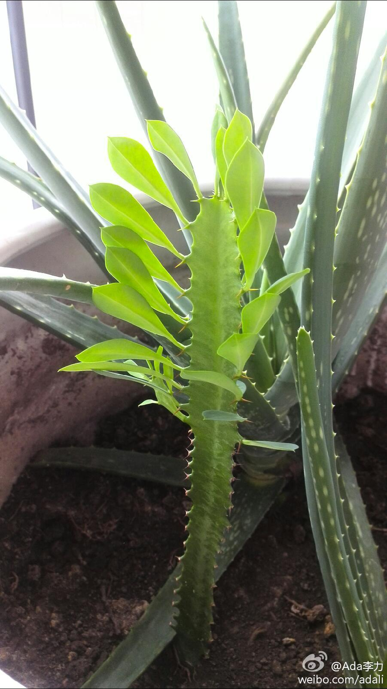

回复@李智勇SZ:如果成立公司，就从自己做起。@捕捉翻倍美股:【过劳死背后的权利与责任】在员工对企业的履责程度上，越在基层的员工发言权越小，越容易成为过劳的主要受害者。无序博弈会让所有人成为输家，企业与员工如果没有恰当的约定，过劳最终会伤害整个系统。这可能会表现为高离职率，更可能是一种被深深隐藏了的消极态度。@李智勇SZ 过劳死背后的权利与责任
帮转。没做云计算社区已有蛮长一段时间了。[呵呵]//@北京T4沙龙: @甲骨文Java社区 @家常咖啡 @甲骨文云计算 @Born白清杰 @Ada李力 @InfoQ@北京T4沙龙:北京T4沙龙将在本周四举行，地点在远洋光华国际C座21层。 我们邀请了来自oralce的资深工程师介绍如何在openstack中使用solaris系统 活动详情：网页链接
花盆里有颗邻居送的龙骨，种下后，有四个月，一点动静也没有，一直保持原样。几次我都怀疑是不是死了，也疑惑邻居说过的它长得快。也就是这个月初，龙骨开始长叶，没多久就长高了快一倍。- 植物给了我个提醒，长根很重要，但外表经常看不出来。 
 过劳死背后的权利与责任
过劳死背后的权利与责任